Spaces, nested pages, a proper editor, full revision history and page-level permissions. Move off Confluence in one import. No per-seat bill.
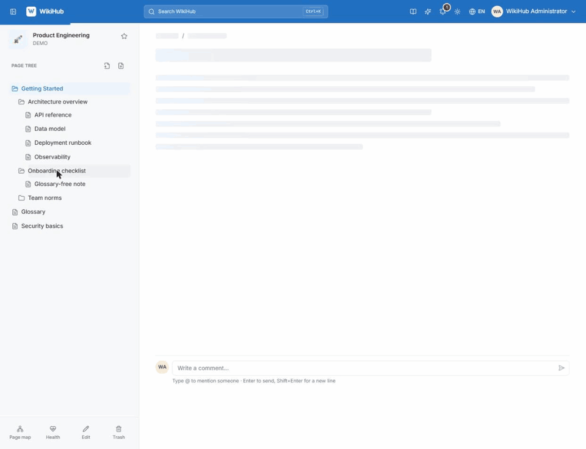
Everything in the box.
One modular application, started with one Docker Compose command. Every feature here ships today; pick a topic.
Write & organise
Spaces and page trees
A space per team, Open or Restricted. Pages nest as deep as you need and move anywhere, even into another space.
A rich editor
WYSIWYG with a sticky toolbar and a / menu for tables, callouts, toggles and to-dos. Switch to Markdown or HTML source any time.
Drafts that survive
Unsaved edits are kept on the server as your own draft and offered back the next time you open the editor.
Every version kept
Each save is an immutable snapshot with a visual diff and a one-click restore that never destroys later history.
Trash and restore
Deleted pages keep their revisions, comments and attachments and can come back for 30 days by default. The toast has an Undo.
Attachments and Office editing
Images, video with subtitles and audio tracks, PDFs, and in-place Word, Excel and PowerPoint editing through an embedded ONLYOFFICE server.
Code blocks
Syntax highlighting, line numbers, a language label and one-click copy, for the pages that mix prose with config.
Diagrams as text
Type /diagram for Mermaid flowcharts, sequence, class, state, ER and git graphs, with a hand-drawn look and PNG, SVG or .mmd download.
Slide decks without PowerPoint
Open an attached PowerPoint deck and present it full screen straight from the wiki, nothing installed on the presenting computer.
Labels and related pages
Label pages and let WikiHub suggest labels and existing pages on the same topic, one click to add.
Collaborate
Threaded comments
Replies, @mentions with notifications, edit and delete. Sort or narrow by Newest, Most liked, Mentions me or My comments.
Likes
Like pages and comments; click a count to see who. Appreciation without another comment.
Share
Copy a link for people who already have access, or share internally with colleagues picked from a list. Each person gets a notification.
Public share links
An expiring, read-only link with an optional password, for external partners who have no WikiHub account.
Watch a page
Watch a runbook or policy, or a page and all its children, and hear about changes without having to keep checking.
Save, pin and star
Save pages for later, pin pages and star spaces, so the ones you use are one click away.
Notifications
Mentions and replies reach you in the bell, with an unread count in the top bar.
Activity and profiles
A contribution chart per person, and repeated edits of one page fold into a single row.
Issue tracker
Anyone reports a problem with screenshots and labels. Managers claim, assign, note and close, one at a time or in bulk, and export to Word.
Contact an administrator
Someone who cannot sign in sends a request from the sign-in screen; admins handle it under Requests.
Search & discovery
One search box
Ctrl K across every space and page you may see. Matched words highlighted, accents optional, English and Vietnamese pairs matched.
Go to and commands
Type change password to jump to the form, or start with : for :help, :account, :users, :trash and more.
Hybrid and semantic
Keyword ranking by how telling each word is, typos in titles tolerated. With an embedding model it also finds pages by meaning.
Search inside files
Words in attached Word, Excel, PDF and HTML files are indexed with their page. Ask about one file alone.
Knowledge graph
Related pages are worked out from links, names and similar content, listed under each page and drawn as a map, for one space or all of them, with Insights for orphans.
Content health
Owners get a report of pages that may be out of date, broken links, orphans and duplicates, with Check with AI and Still correct.
Unanswered questions
What search and chat could not answer, grouped by question. Mark one answered with a page and everyone who asked is notified.
A Help centre that answers
In-app guides in both languages. /help searches as you type, and a whole question gets an answer from the guides alone.
Shortcuts cheat sheet
Press ? for keyboard shortcuts, search filters and editor commands in one place, so you learn them as you go.
AI assistant, optional
Bring your own endpoint
Any OpenAI-compatible service. WikiHub never runs a model itself. Keys are stored encrypted, shown masked and left out of backups.
TL;DR
A short summary of any page, in its own language or switched to English or Tiếng Việt.
Create a page with AI
Describe it; the AI reads related pages, asks a few questions, then drafts it. Nothing is saved until you create the page.
Writing assistant
Ctrl Space on an empty line to draft. Select text to rewrite, fix grammar or match the wiki's terminology.
Explain or translate
Select words on a page and get an explanation in context, or a translation into English or Tiếng Việt.
Ask AI, with sources
Questions in the search box are answered only from pages you can open. Every statement carries a numbered source; an answer that cannot be tied to a page is never shown.
Chat
A multi-turn panel that streams replies and cites pages. Attach up to three files, and set the detail from Brief to Detailed.
Chat that acts, once you confirm
Ask it to create a space and write a guide in it: it shows a plan and changes nothing until you press Confirm and run.
Web search, off by default
An administrator can let chat look up public technical questions. Only a short sanitised query leaves WikiHub, and answers say what they rest on.
Self-hosted Ollama
Enable Ollama from the UI for embeddings, with a card showing install progress, memory and CPU. Unused, it costs no memory.
Editable skills and limits
Edit the instructions behind each feature and reset them in one click. Set hourly limits per person.
Honest when not set up
Every AI control stays visible and says exactly what is missing, instead of silently disappearing.
Access & security
Open or Restricted spaces
Per-user and per-group grants decide who can read and who can edit, space by space.
Page-level access
Allow-lists narrow a single page. Children inherit View and Edit by default; switch it off to start from a copy and customise.
Effective permissions
A view that resolves what any one person can really do. The foot of every page says how many people can read it.
Groups
Grant to a group once, then use it for space and page permissions everywhere.
View as another user
Administrators can support someone without knowing their password. A banner stays on, and every action records the administrator behind it.
Audit log
Administrator actions are recorded and can be browsed, filtered and exported.
Your account
Profile with avatar, bio and links, a strong-password generator, and a list of active sessions you can sign out.
Hardened by default
Argon2id passwords and rotating refresh tokens. Uploads checked by extension, MIME type and magic bytes. A strict CSP, and logs that redact secrets.
Import, export & backup
Confluence import
An XML or HTML space export becomes real spaces and pages, with live progress. Unknown macros turn into visible callouts and a report lists what did not fit.
Confluence export
Export to Confluence Data Center XML for a one-way hand-off.
Import documents
Word, PDF, HTML, Markdown, EPUB, ODT or RTF, up to 20 at a time in a background job with per-file progress.
Spreadsheets and Google links
Excel and CSV become tables, a multi-sheet workbook a page with a child per sheet. A shared Google Doc or Sheet imports from its link.
Import review
Each page is checked against its source file for lost text, headings, lists and tables. A fix is kept only if the page agrees with the file better, as its own revision.
Translate on import
Optionally translate each page into English or Vietnamese, accepting a piece only when its tags, links, images and code are unchanged.
Export anything
Markdown, HTML or Word for a page, a subtree, a space or the whole instance as an offline ZIP, plus Export PDF for a page.
Scheduled backups
Resumable backups that carry permissions, groups, comments, likes and history, with checks against uploading the wrong archive.
Administer
Users and groups
Create, activate, disable, reset passwords and remove accounts. The bootstrap administrator is protected.
Theme and branding
Curated palettes or a custom hex colour, logo presets or your own upload, with a live preview before anything goes live.
English and Tiếng Việt
Switch the whole interface from the top bar, no reload. The choice is remembered per browser.
Light, dark or system
A three-state theme that follows your system by default.
Statistics
Over 7, 30 or 90 days: users, people active, edits, page views, AI token use and the most viewed pages and spaces.
Server monitor
Load, memory, swap, disk and uptime, plus WikiHub's own Docker containers with their last log lines. Read-only.
Storage browser
Filter bucket objects, get safe download links, preview files and delete what you no longer need.
Workspace settings
Site name, session length, upload and archive limits, attachment types, trash period and sidebar visibility per role.
Every screen is documented in the walkthrough, and in the app's own Help centre.
What it looks like day to day.
Screens captured from a running instance. Nothing here is a mockup.
Pages come first
Breadcrumbs, the space's page tree and a reading column sized for long documents. Comments, reactions and history sit underneath, out of the way.
- The page tree nests as deep as you need, and pages move anywhere
- Threaded comments, mentions and likes sit under the page
- Related pages are listed beneath, each with why it is related
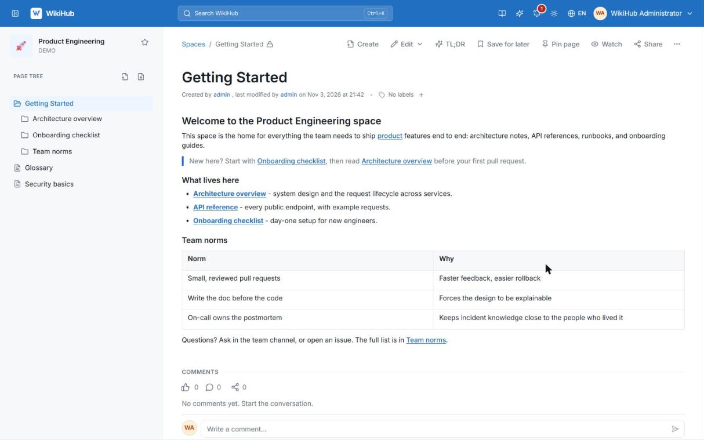
One box for everything
Accents optional, English and Vietnamese matched. Type : to run commands like :help or :account.
- Matched words are highlighted, and only pages you may see appear
- A Go to section jumps to settings: type change password
- Start with
:for commands such as:trashor:ask
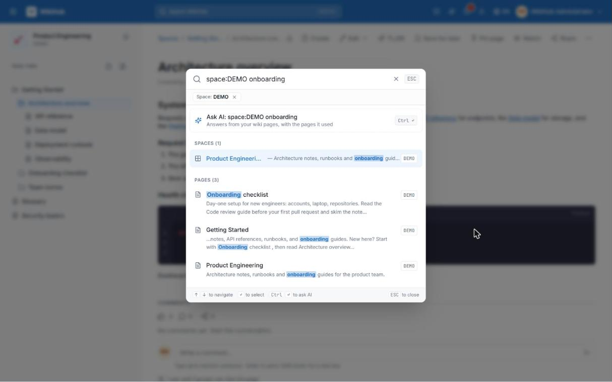
See how your pages connect
WikiHub works out which pages belong together, with nobody linking them by hand, and draws the space as a map. Hover a page to light up its neighbours.
- Ties come from links, titles named in the text, similar content and the page tree
- Colour the map by group or branch, for one space or all of them
- Insights point at pages tied to nothing, so you can link or move them
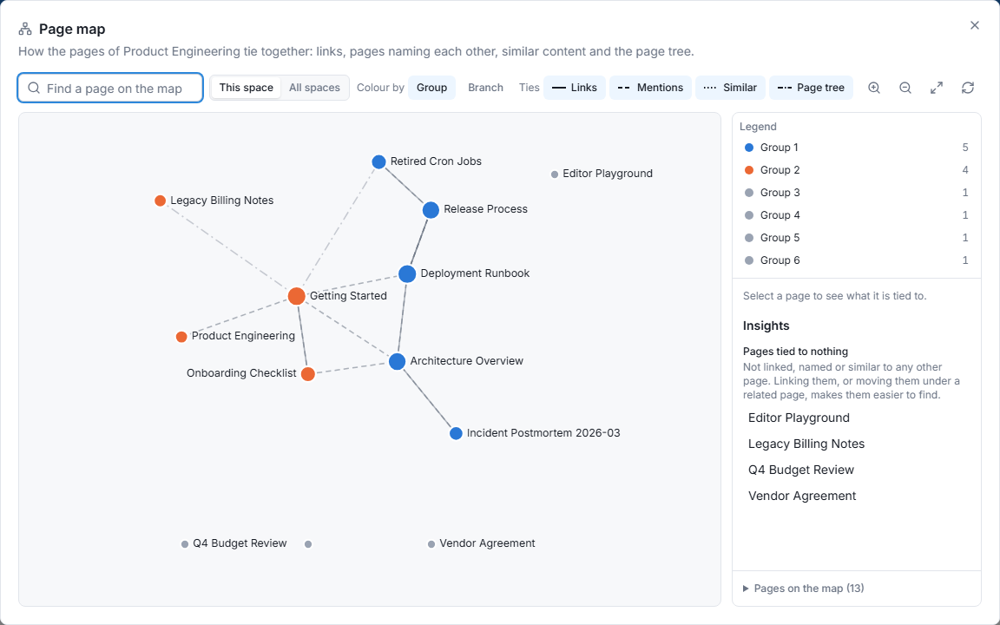
Answers from your own pages
Ask in the search box and get a short answer written only from pages you can open, with its sources numbered underneath.
- Every statement carries a source mark that opens the page it came from
- An answer that cannot be tied to a page is never shown
- Continue in chat, or summarise any page with TL;DR
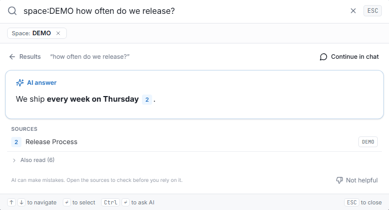
Know who can read a page
Grants at space and page level, inheritance you can turn off, and an effective-permissions view that settles arguments.
- Open or Restricted spaces, with grants for people and groups
- Child pages inherit View and Edit by default; switch it off to customise
- The foot of every page says how many people can read it
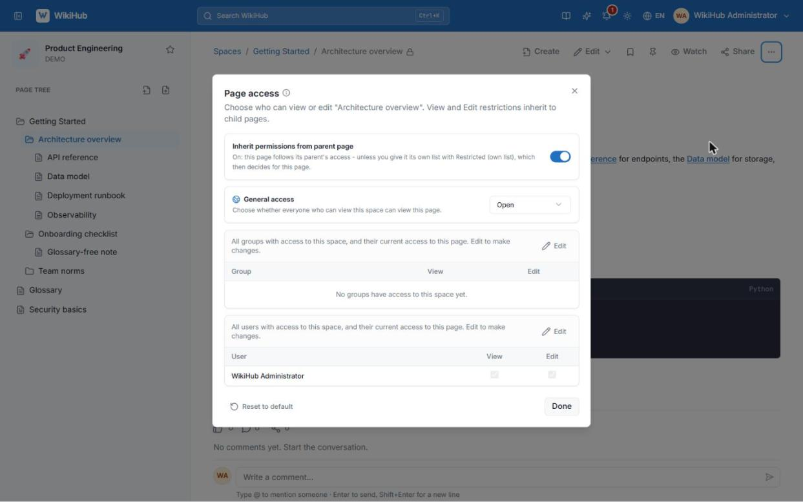
Runbooks that read well
Syntax highlighting, line numbers and copy buttons for the pages that mix prose with config.
- Syntax highlighting with a language label
- Line numbers, so a runbook step can be referred to
- One-click copy for every block
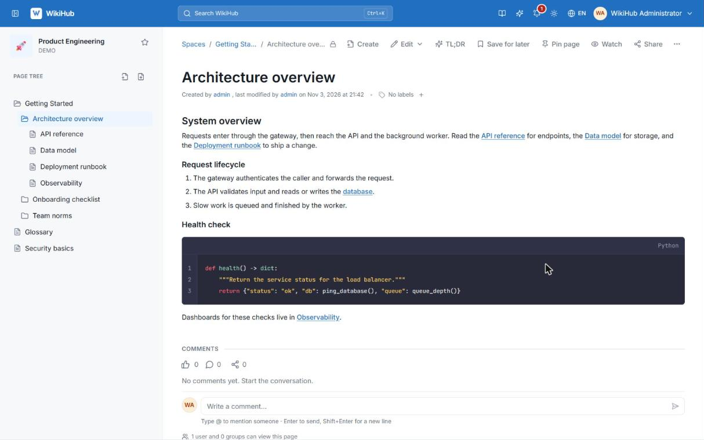
Never lose your place
Unsaved edits are kept as your own draft and offered back the next time you open the editor.
- Saved on the server as you type, so a closed tab costs nothing
- Save a draft by hand at any time, or Save to publish a version
- Offered back the next time you open the editor
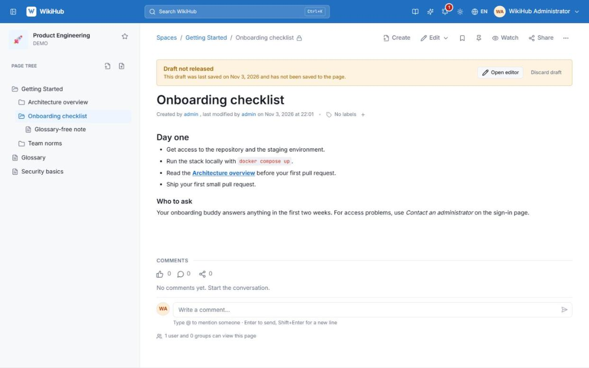
Bring the old wiki, keep a backup
Import a Confluence export with live progress, and schedule resumable backups of everything.
- Confluence XML or HTML exports, with a live progress report
- A report lists every unsupported macro, nothing is dropped silently
- Scheduled, resumable backups that include permissions and comments
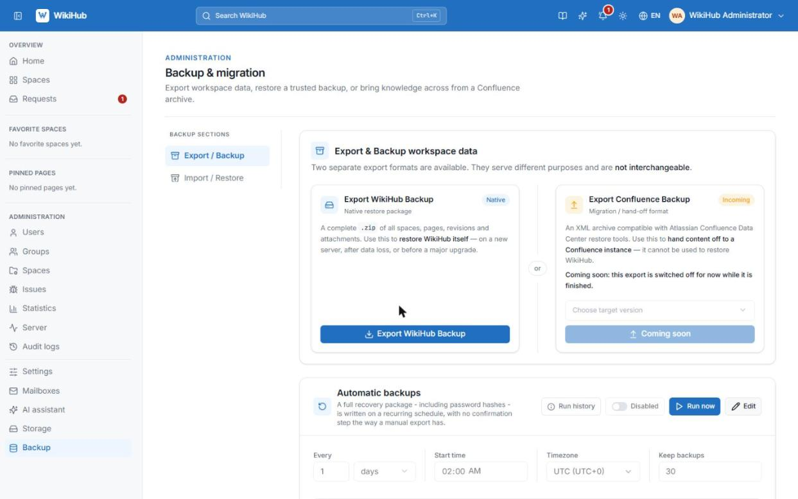
Answers inside the app
A Help centre in both languages. Search it as you type, or ask a whole question.
- Guides search as you type, in both languages, accents optional
- Ask a whole question and the answer comes from the guides alone
- Every guide has its own page with Previous and Next
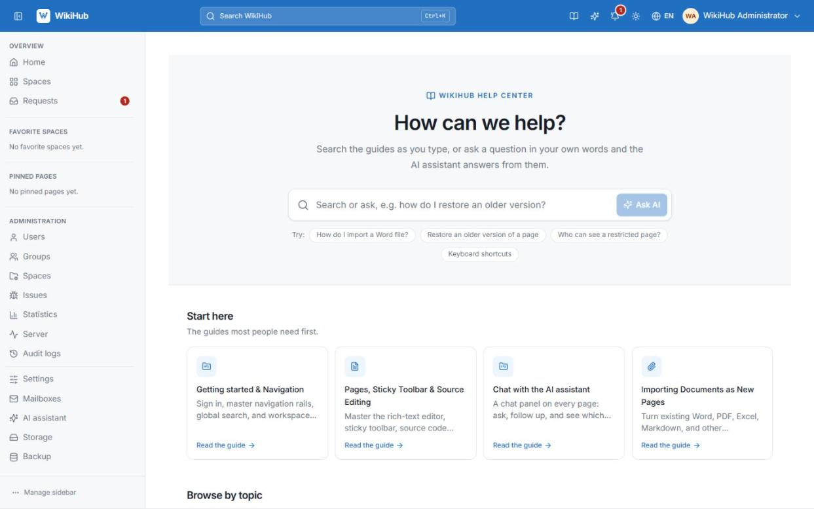
Make it yours
Pick a palette or a hex colour, upload a logo, preview before it goes live.
- Curated colour palettes, or a custom hex colour
- Logo presets, or upload your own
- A live preview before anything goes live
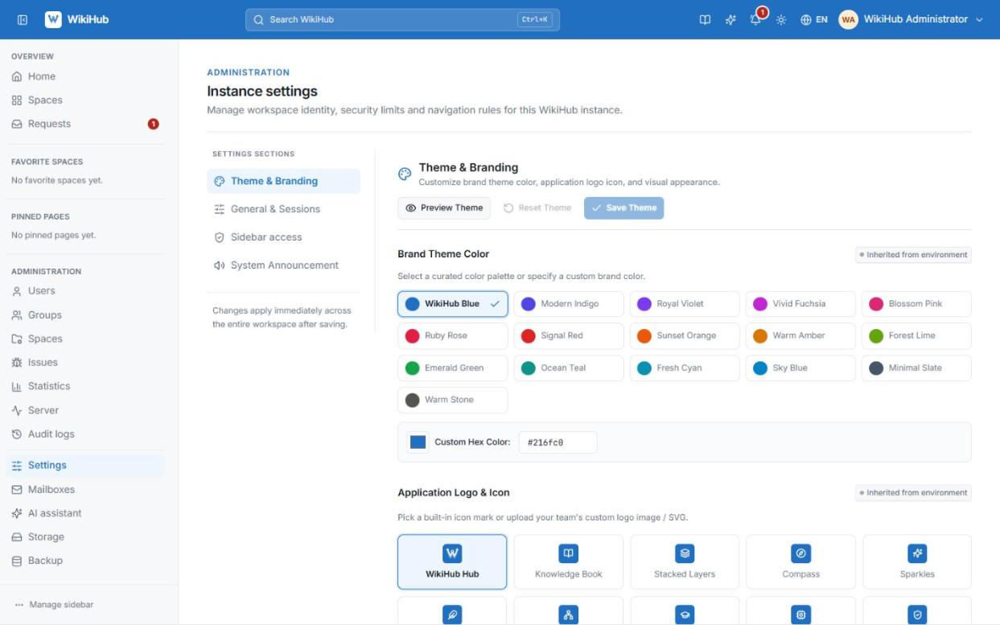
Try it on a laptop. Run it for the company.
The same stack all the way: start locally, move to a server with prebuilt images, bring your old wiki with you.
Running on your machine in minutes.
- One script starts the database, cache, storage, API and web app
--devfor hot reload while you hack on it- A seeded administrator to sign in with
A server, no build step.
- Images published to GitHub Container Registry on every push
- Copy one compose file and a
.env, then pull - Pin a
vX.Ytag when you want stability
Bring Confluence with you.
- XML or HTML space exports become real spaces and pages
- Word, PDF, Markdown, Excel and Google Docs too
- Nothing dropped silently: a report lists what didn't fit
Three commands to a running wiki.
All you need is Docker 24+ with Compose v2.
- Open the app once the script says the stack is up.
- Sign in as the seeded administrator and create a space.
- Import a Confluence export from Administration → Backup, or start writing.
- Optionally connect an AI endpoint under Administration → AI assistant.
How it stacks up.
For teams that want structured documentation without paying per seat or keeping it on someone else's servers.
| WikiHub | Confluence | Notion | |
|---|---|---|---|
| Self-hosted | Always | Data Center only, paid | No |
| Open source | Apache-2.0 | No | No |
| Per-seat pricing | None | Paid plans | Paid plans |
| Data on your infrastructure | Yes | Data Center only | No |
| Confluence import | One step | — | No |
| Revision history & restore | Yes | Yes | Yes |
| Space & page permissions | Yes | Yes | Varies by plan |
Your documentation, on your terms.
Free, open source and yours to run. If it's useful, a star helps other teams find it.